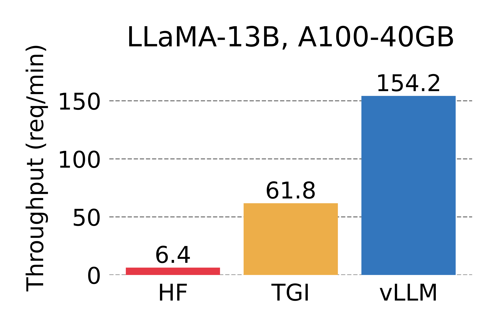
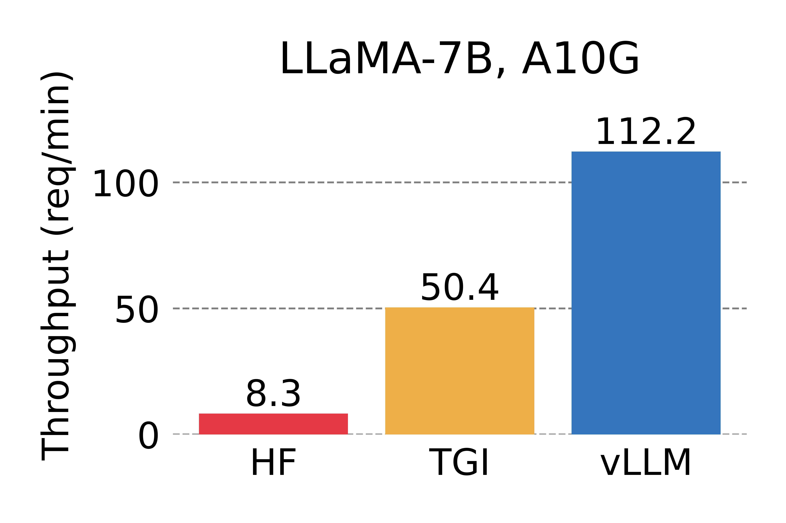
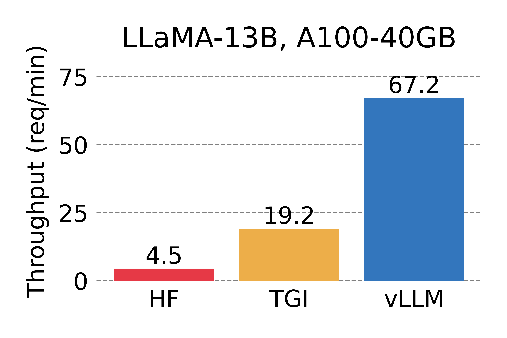
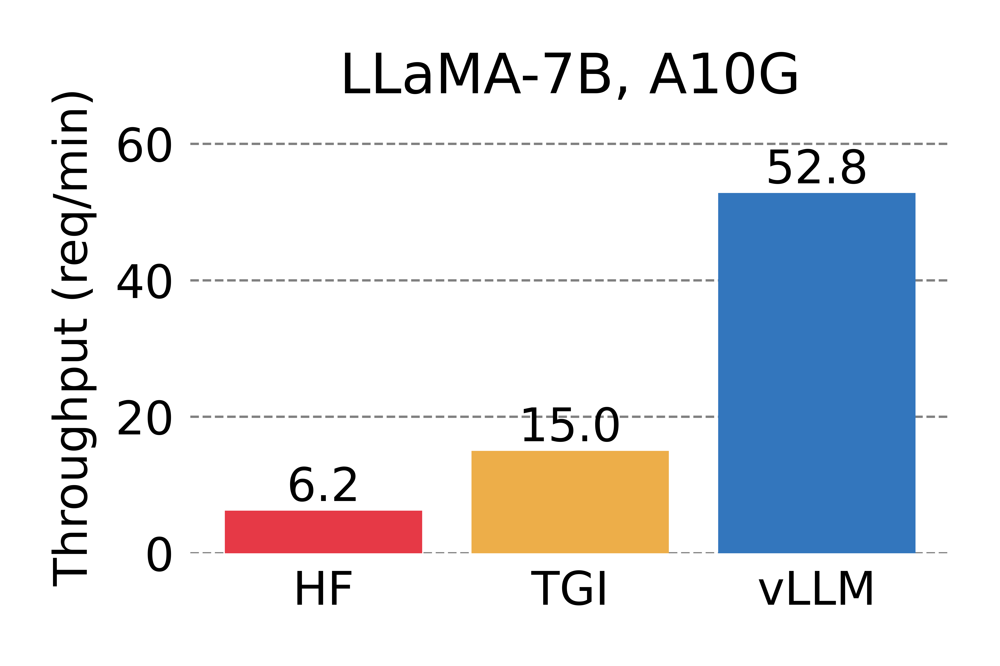
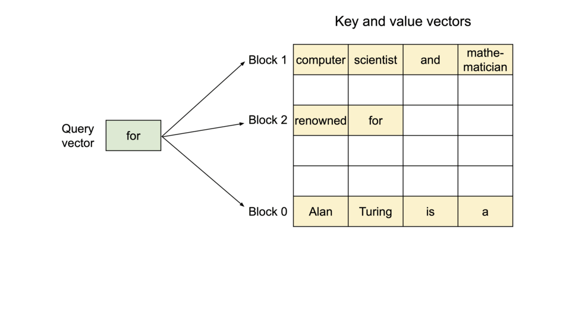
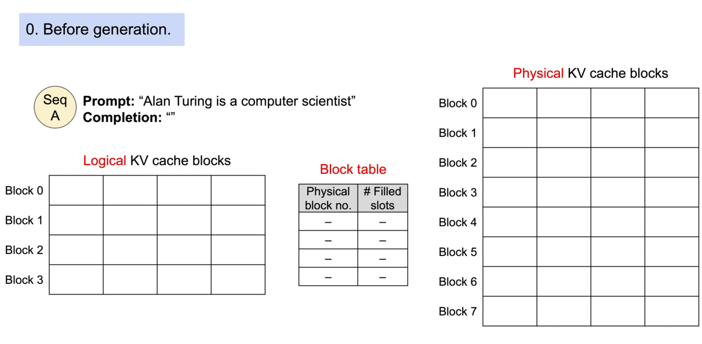
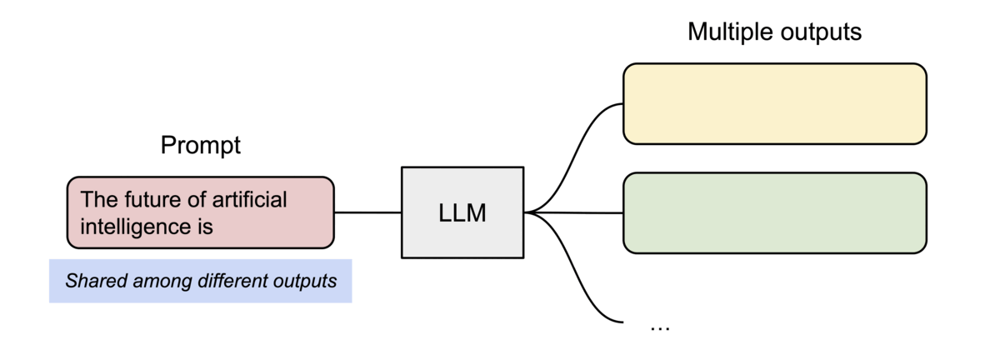
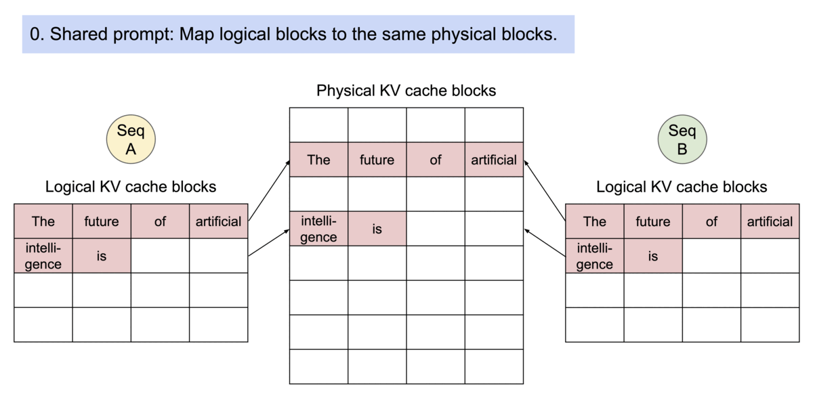
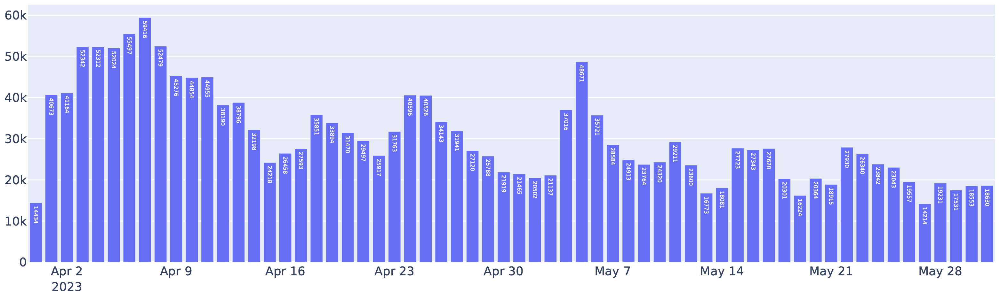

vLLM: Easy, Fast, and Cheap LLM Serving with PagedAttention
GitHub | Documentation | Paper
LLMs promise to fundamentally change how we use AI across all industries. However, actually serving these models is challenging and can be surprisingly slow even on expensive hardware. Today we are excited to introduce vLLM, an open-source library for fast LLM inference and serving. vLLM utilizes PagedAttention, our new attention algorithm that effectively manages attention keys and values. vLLM equipped with PagedAttention redefines the new state of the art in LLM serving: it delivers up to 24x higher throughput than HuggingFace Transformers, without requiring any model architecture changes.
vLLM has been developed at UC Berkeley and deployed at Chatbot Arena and Vicuna Demo for the past two months. It is the core technology that makes LLM serving affordable even for a small research team like LMSYS with limited compute resources. Try out vLLM now with a single command at our GitHub repository.
Beyond State-of-the-art Performance
We compare the throughput of vLLM with HuggingFace Transformers (HF), the most popular LLM library and HuggingFace Text Generation Inference (TGI), the previous state of the art. We evaluate in two settings: LLaMA-7B on an NVIDIA A10G GPU and LLaMA-13B on an NVIDIA A100 GPU (40GB). We sample the requests’ input/output lengths from the ShareGPT dataset. In our experiments, vLLM achieves up to 24x higher throughput compared to HF and up to 3.5x higher throughput than TGI.


Serving throughput when each request asks for one output completion. vLLM achieves 14x - 24x higher throughput than HF and 2.2x - 2.5x higher throughput than TGI.


Serving throughput when each request asks for three parallel output completions. vLLM achieves 8.5x - 15x higher throughput than HF and 3.3x - 3.5x higher throughput than TGI.
The Secret Sauce: PagedAttention
In vLLM, we identify that the performance of LLM serving is bottlenecked by memory. In the autoregressive decoding process, all the input tokens to the LLM produce their attention key and value tensors, and these tensors are kept in GPU memory to generate next tokens. These cached key and value tensors are often referred to as KV cache. The KV cache is
- Large: Takes up to 1.7GB for a single sequence in LLaMA-13B.
- Dynamic: Its size depends on the sequence length, which is highly variable and unpredictable. As a result, efficiently managing the KV cache presents a significant challenge. We find that existing systems waste 60% – 80% of memory due to fragmentation and over-reservation.
To address this problem, we introduce PagedAttention, an attention algorithm inspired by the classic idea of virtual memory and paging in operating systems. Unlike the traditional attention algorithms, PagedAttention allows storing continuous keys and values in non-contiguous memory space. Specifically, PagedAttention partitions the KV cache of each sequence into blocks, each block containing the keys and values for a fixed number of tokens. During the attention computation, the PagedAttention kernel identifies and fetches these blocks efficiently.

PagedAttention: KV Cache are partitioned into blocks. Blocks do not need to be contiguous in memory space.
Because the blocks do not need to be contiguous in memory, we can manage the keys and values in a more flexible way as in OS’s virtual memory: one can think of blocks as pages, tokens as bytes, and sequences as processes. The contiguous logical blocks of a sequence are mapped to non-contiguous physical blocks via a block table. The physical blocks are allocated on demand as new tokens are generated.

Example generation process for a request with PagedAttention.
In PagedAttention, memory waste only happens in the last block of a sequence. In practice, this results in near-optimal memory usage, with a mere waste of under 4%. This boost in memory efficiency proves highly beneficial: It allows the system to batch more sequences together, increase GPU utilization, and thereby significantly increase the throughput as shown in the performance result above.
PagedAttention has another key advantage: efficient memory sharing. For example, in parallel sampling, multiple output sequences are generated from the same prompt. In this case, the computation and memory for the prompt can be shared between the output sequences.

Example of parallel sampling.
PagedAttention naturally enables memory sharing through its block table. Similar to how processes share physical pages, different sequences in PagedAttention can share the blocks by mapping their logical blocks to the same physical block. To ensure safe sharing, PagedAttention keeps track of the reference counts of the physical blocks and implements the Copy-on-Write mechanism.

Example generation process for a request that samples multiple outputs.
PageAttention’s memory sharing greatly reduces the memory overhead of complex sampling algorithms, such as parallel sampling and beam search, cutting their memory usage by up to 55%. This can translate into up to 2.2x improvement in throughput. This makes such sampling methods practical in LLM services.
PagedAttention is the core technology behind vLLM, our LLM inference and serving engine that supports a variety of models with high performance and an easy-to-use interface. For more technical details about vLLM and PagedAttention, check out our GitHub repo and stay tuned for our paper.
The Silent Hero Behind LMSYS Vicuna and Chatbot Arena
This April, LMSYS developed the popular Vicuna chatbot models and made them publicly available. Since then, Vicuna has been served in Chatbot Arena for millions of users. Initially, LMSYS FastChat adopted a HF Transformers based serving backend to serve the chat demo. As the demo became more popular, the peak traffic ramped up several times, making the HF backend a significant bottleneck. The LMSYS and vLLM team have worked together and soon developed the FastChat-vLLM integration to use vLLM as the new backend in order to support the growing demands (up to 5x more traffic). In an early internal micro-benchmark by LMSYS, the vLLM serving backend can achieve up to 30x higher throughput than an initial HF backend.
Since mid-April, the most popular models such as Vicuna, Koala, and LLaMA, have all been successfully served using the FastChat-vLLM integration – With FastChat as the multi-model chat serving frontend and vLLM as the inference backend, LMSYS is able to harness a limited number of university-sponsored GPUs to serve Vicuna to millions of users with high throughput and low latency. LMSYS is expanding the use of vLLM to a wider range of models, including Databricks Dolly, LAION’s OpenAsssiant, and Stability AI’s stableLM. The support for more models is being developed and forthcoming.

Requests served by FastChat-vLLM integration in the Chatbot Arena between April to May. Indeed, more than half of the requests to Chatbot Arena use vLLM as the inference backend.
This utilization of vLLM has also significantly reduced operational costs. With vLLM, LMSYS was able to cut the number of GPUs used for serving the above traffic by 50%. vLLM has been handling an average of 30K requests daily and a peak of 60K, which is a clear demonstration of vLLM’s robustness.
Get started with vLLM
Install vLLM with the following command (check out our installation guide for more):
$ pip install vllmvLLM can be used for both offline inference and online serving. To
use vLLM for offline inference, you can import vLLM and use the LLM
class in your Python scripts:
from vllm import LLM
prompts = ["Hello, my name is", "The capital of France is"] # Sample prompts.
llm = LLM(model="lmsys/vicuna-7b-v1.3") # Create an LLM.
outputs = llm.generate(prompts) # Generate texts from the prompts.To use vLLM for online serving, you can start an OpenAI API-compatible server via:
$ python -m vllm.entrypoints.openai.api_server --model lmsys/vicuna-7b-v1.3You can query the server with the same format as OpenAI API:
$ curl http://localhost:8000/v1/completions \
-H "Content-Type: application/json" \
-d '{
"model": "lmsys/vicuna-7b-v1.3",
"prompt": "San Francisco is a",
"max_tokens": 7,
"temperature": 0
}'For more ways to use vLLM, please check out the quickstart guide.
Blog written by Woosuk Kwon and Zhuohan Li (UC Berkeley). Special thanks to Hao Zhang for the integration of vLLM and FastChat and for writing the corresponding section. We thank the entire team — Siyuan Zhuang, Ying Sheng, Lianmin Zheng (UC Berkeley), Cody Yu (Independent Researcher), Joey Gonzalez (UC Berkeley), Hao Zhang (UC Berkeley & UCSD), and Ion Stoica (UC Berkeley).